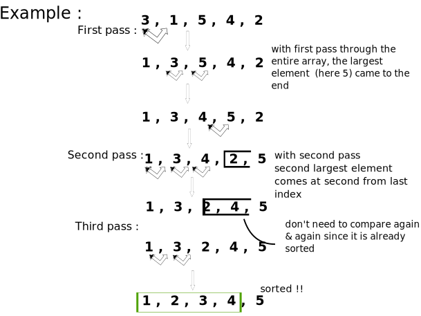
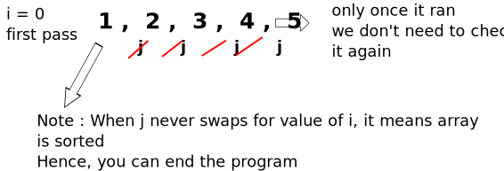
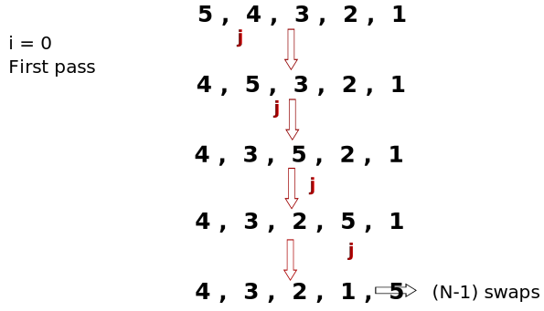

Sorting → If is a process of arranging items systematically.
Bubble sort → It is the simplest algorithm that works by repeatedly swapping the
adjacent elements if they are in wrong order.

Bubble sort is also known as sinking sort or exchange sort
Since here no extra space is required i.e., like copying the array etc. is not required.
This also known as inplace sorting algorithm
1. Best Case → array is sorted

☆ Best case comparisons = N-1 = N
Since in time complexity constants are ignored, we don't wnat exact time, we just
want
relationship i.e., mathematical function.
2. Worst case → sorting descending order array to ascending order

total comparisons = N - 1 + N - 2 + N - 3 + N - 4
= 4N - (1 + 2 + 3 + 4)
= 4N -[(N*(N+1))/2]
= 4N - (N2 + N) / 2
= O((7N - N2)/2)
total comparisons = O(N2
In time complexity, constant and less dominating terms are ignored
import java.util.Arrays;
public class Bubble {
public static void main(String[] args) {
int[] arr = { 5, 4, 3, 1, 2 };
bubble(arr);
System.out.println(Arrays.toString(arr));
}
static void bubble(int[] arr) {
// if the array is already sorted then the loop is still running so to prevent
// this we do this
boolean swapped;
// run the steps n-1 times
for (int i = 0; i < arr.length; i++) {
swapped = false;
// for each step, max item will come at the last respective index
for (int j = 1; j < arr.length - i; j++) {
// swap if the item is smaller the previous item
if (arr[j] < arr[j - 1]) {
// swap
int temp = arr[j];
arr[j] = arr[j - 1];
arr[j - 1] = temp;
swapped = true;
}
}
// if you did not swap for a particular value of i, it means the array is sorted
// hence stop the program
if (!swapped)
break;
}
}
}